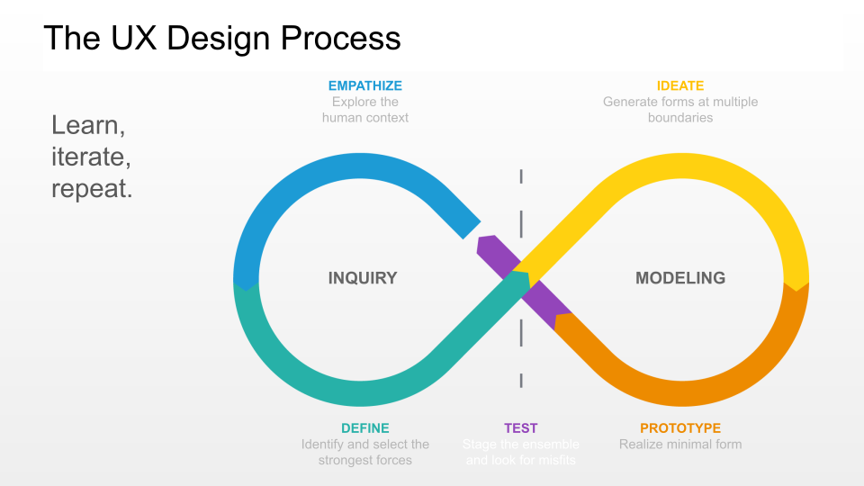
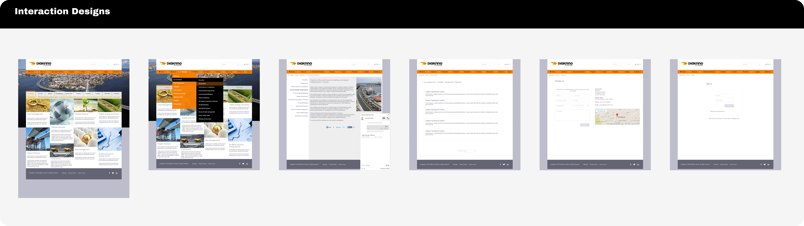

<style>
* {box-sizing: border-box}
body {font-family: Verdana, sans-serif; margin:0}

img {vertical-align: middle;}
h2.sub-head{
  color: #000 !important;
  font-size: 22px !important;
  font-weight: 400 !important;
  margin-top: 3em;
}
.list-style{
  padding-left: 2em;
}
h4, span.strong{
  font-weight: bold !important;
}
.back-container{
  margin-top: 4em;
  width: 80%;

}
.case-studies-back-button{
  text-decoration: none; padding: .5em; border-radius: 7px; font-size: 15px; color: #000; background-color: ; padding: 1em; border:1px solid #000;
}

/* On smaller screens, decrease text size */
@media only screen and (max-width: 300px) {
  .prev, .next,.text {font-size: 11px}
}


</style>
<header id="home-header" style="background-image: url({{ site.baseurl }}{{ site.sidebar_image }});">
  <div class="top-container" >
    <div class="container">
       <div class="style-element">
        <!--<br>-->
        <!---->
          <h1 style="font-family:lobster">{{ site.title }} <span style="display: none;" class="mobile-title"> &middot; Sr/Lead UX </span></h1>
          <h3 class="style mobile-header" style="margin-bottom: 1em; font-size: 24px;"> Principal UX & Product Designer</h3>
          <h3 class="style">
            <a href="index.html" class="side-menu"> Home</a> 
            <a href="profile.html" class="side-menu"> About</a>
           <a href="about.html" class="side-menu"> Skills</a>
           <a href="case-studies.html" class="side-menu active"> Projects</a>
            <a href="https://www.jmcleod.me/images/Resume.pdf" target="_blank" class="side-menu"> Resume</a>
            <!--<a href="#" > Contact Me</a><br>-->
          </h3>
        </div>
    </div>
  </div>
</header>
<article>
  <div class="container">
     <div class="portfolio content" >
        <h2 class="posts">DK Rino Case Study</h2>
        <hr>
        <div class="portfolio-images content-child">
            <div class="mySlides">
              
              <p>&nbsp;</p>
            </div>
          </div>
          <h2 class="sub-head">Problem Statement</h2>
          <p>
            Organizations and environmental researchers need an intuitive way to explore, compare, and understand environmental dispersion modeling software. However, existing platforms often present information in a technical, text-heavy manner, making it difficult for potential users to grasp key features, applications, and benefits.
          </p>
          
            <h2 class="sub-head">The Solution</h2>
            <p>
              Design a modern, user-friendly web application that showcases the software’s capabilities, use cases, and pricing models while ensuring an engaging and informative experience for potential users.
            </p>
          <div class="content-child">
            <h2 class="sub-head">Roles & Responsibilities:</h2>
            <ul class="list-style">
              <li>UX Design Lead</li>
              <li>User Research</li>
              <li>Wireframing & Prototyping</li>
              <li>Usability Testing</li>
              <li>Interaction Design</li>
            </ul>
            <h2 class="sub-head">My UX Process</h2>
            <p>
              In order to create a well-defined User Experience (UX) process to ensure that products are user-centered, intuitive, and effective. I incorporated strategy, research, design, testing, and iteration.
            </p>
            <div class="mySlides">
              
            </div>
            <h2 class="sub-head">User Research</h2>
            <h4>We conducted interviews and surveys with key stakeholders, including:</h4>
            <ul class="list-style">
              <li><span class="strong">Environmental Scientists & Researchers: </span> To understand what data and features they need.</li>
              <li><span class="strong">Government & Regulatory Officials: </span> To determine compliance and reporting requirements.</li>
              <li><span class="strong">Business Clients (Industrial, Urban Planning, Energy Sectors): </span> To analyze purchasing considerations and decision-making criteria.</li>
            </ul>
            <h4>We analyzed existing environmental modeling platforms and found:</h4>
            <ul class="list-style">
              <li>Many websites had overwhelming technical content with poor hierarchy.</li>
              <li>Competitor sites lacked interactive demos or visual model comparisons.</li>
              <li>Pricing structures were often unclear, making decision-making difficult.</li>
            </ul>
          </div>
        <div class="content-child">
          <div class="content-child">
            <h2 class="sub-head">Low-Medium Fidelity Wireframes</h2>
            <ul class="list-style">
              <li>Hero section with a clear software overview</li>
              <li>Feature breakdown with interactive comparisons</li>
              <li>Case studies for real-world applications</li>
              <li>Pricing and licensing information</li>
              <li>Call-to-action (CTA) for requesting a demo</li>
            </ul>
          </div>
          <div class="content-child">
            <h2 class="sub-head">Interaction Design Flows</h2>
            <div class="mySlides">
              
            </div>
          </div>
          
          <div class="content-child">
            <h2 class="sub-head">High Fidelity Prototype</h2>
            <p>
              To bridge the gap between design concepts and final implementation, I utilized high-fidelity prototypes to create realistic, interactive experiences that closely resembled the final product.
            </p><br>
            <h4><strong>Design Approach:</strong></h4>
            <ul class="list-style">
              <li><span class="strong">Interactive Model Explorer:</span> Users can browse, compare, and understand different dispersion models.</li>
              <li><span class="strong">Live Simulation Preview:</span> A real-time demo allows users to see the model in action.</li>
              <li><span class="strong">Customizable Reports & Data Exports:</span> Downloadable compliance reports and analytical data.</li>
              <li><span class="strong">Clear Pricing Structure:</span> Users can easily compare pricing and licensing options.</li>
              <li><span class="strong">Mobile-Friendly Interface:</span> Optimized UI for mobile and tablet users.</li>
            </ul>
            <br>
            <div class="mySlides">
              
            </div> <br>
            <h4>Usability Testing & Iterations</h4>
            <ul class="list-style">
                <li>Conducted usability tests with 10 participants across different personas.</li>
                <li>Focused on ease of navigation, clarity of information, and engagement with interactive elements.</li>
            </ul><br>
            <h4>Key Insights & Iterations</h4>
            <ul class="list-style">
                <li><span class="strong">Technical terms were difficult to understand for non-experts:</span> Implemented tooltips & glossary explanations.</li>
                <li><span class="strong">Users wanted real-world examples of model effectiveness:</span> Added case studies with interactive before/after scenarios.</li>
                <li><span class="strong">TSlow loading times for interactive previews:</span> Optimized performance by using lightweight animations & caching strategies.</li>
            </ul><br>
            <h4>Impact</h4>
            <ul class="list-style">
              <li><span class="strong">40% increase </span>in time spent on the site due to improved engagement.</li>
              <li><span class="strong">30% improvement </span>in conversion rates (demo requests and sign-ups).</li>
              <li> Simplified onboarding, reducing user frustration with complex data.</li>
            </ul>
          </div>
          <div class="back-container">
            <a href="case-studies.html" class="case-studies-back-button">
               < Back to Portfolio Case Study List
            </a>
          </div>
        </div>
          
    </div> 
    <br>
   

      <!-- <a class="mybutton" href="https://www.jmcleod.me/images/resume-branding.pdf" target="_blank"> View Resume Brand</a> -->

  </div> 


</article>


